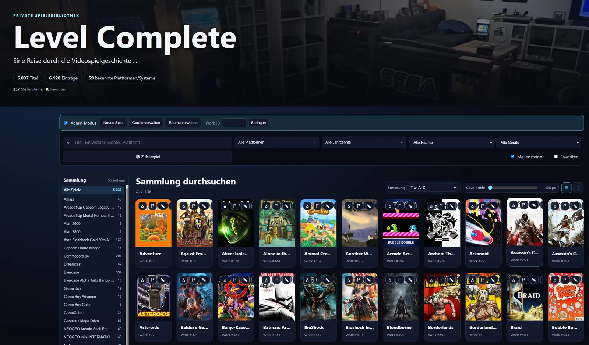
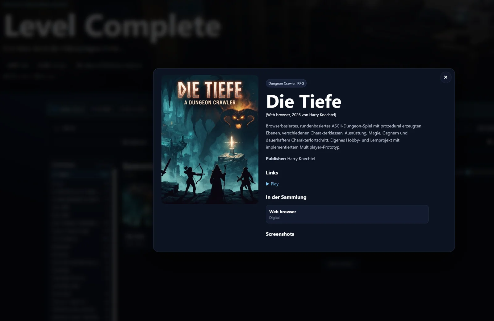

Level Complete
Spiele im Blick. Geschichten dahinter.

Hinter dem Projekt.
Level Complete ist ein eigener Spielekatalog. Die Aufnahmen zeigen die Sammlung, Such- und Filtermöglichkeiten sowie eine Detailansicht.
Merkmale & Einblicke.
- Spielekatalog als dokumentierter Projektkontext
- Such- und Filtermöglichkeiten im Katalog
- Projektvorstellung anhand eigener Aufnahmen
Level Complete auf GitHub.
Quellcode und Software sind öffentlich verfügbar: Level Complete 7.2.1 mit LC Toolbox 1.1.6 für Ubuntu 24.04.
Die Software steht unter der MIT-Lizenz. Für Bildassets gelten separate Lizenzhinweise im Repository.
Die persönliche Sammlung bleibt privat: Der private Spielekatalog und persönliche Sammlungsdaten sind nicht öffentlich und nicht Bestandteil der Veröffentlichung.
Katalog & Details.
Vom Nutzer bereitgestellte Projektaufnahmen. Alle gezeigten Oberflächen und Schaltflächen sind Teil statischer Bilder. Hier wird keine Anwendung gestartet; die Bilder belegen keinen aktuell verfügbaren Live-Zugang. Bild auswählen zum Vergrößern.



